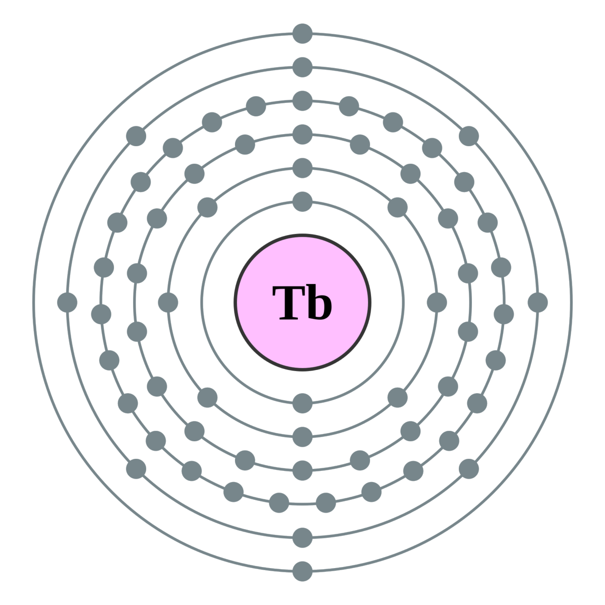

←
→
Terbium is a chemical element with symbol Tb and atomic number 65. It is a silvery-white, rare earth metal that is malleable, ductile, and soft enough to be cut with a knife. The ninth member of the lanthanide series, terbium is a fairly electropositive metal that reacts with water, evolving hydrogen gas. Terbium is never found in nature as a free element, but it is contained in many minerals, including cerite, gadolinite, monazite, xenotime, and euxenite.
Swedish chemist Carl Gustaf Mosander discovered terbium as a separate elemental compound in 1843. He detected it as an impurity in yttrium oxide, Y2O3. Yttrium and terbium are named after the village of Ytterby in Sweden. Terbium was not isolated in pure form until the advent of ion exchange techniques.Terbium is used to dope calcium fluoride, calcium tungstate and strontium molybdate, materials that are used in solid-state devices, and as a crystal stabilizer of fuel cells which operate at elevated temperatures.
As a component of Terfenol-D (an alloy that expands and contracts when exposed to magnetic fields more than any other alloy), terbium is of use in actuators, in naval sonar systems and in sensors. Most of the world's terbium supply is used in green phosphors. Terbium oxide is in fluorescent lamps and television and monitor cathode ray tubes (CRTs). Terbium green phosphors are combined with divalent europium blue phosphors and trivalent europium red phosphors to provide trichromatic lighting technology, a high-efficiency white light used for standard illumination in indoor lighting.